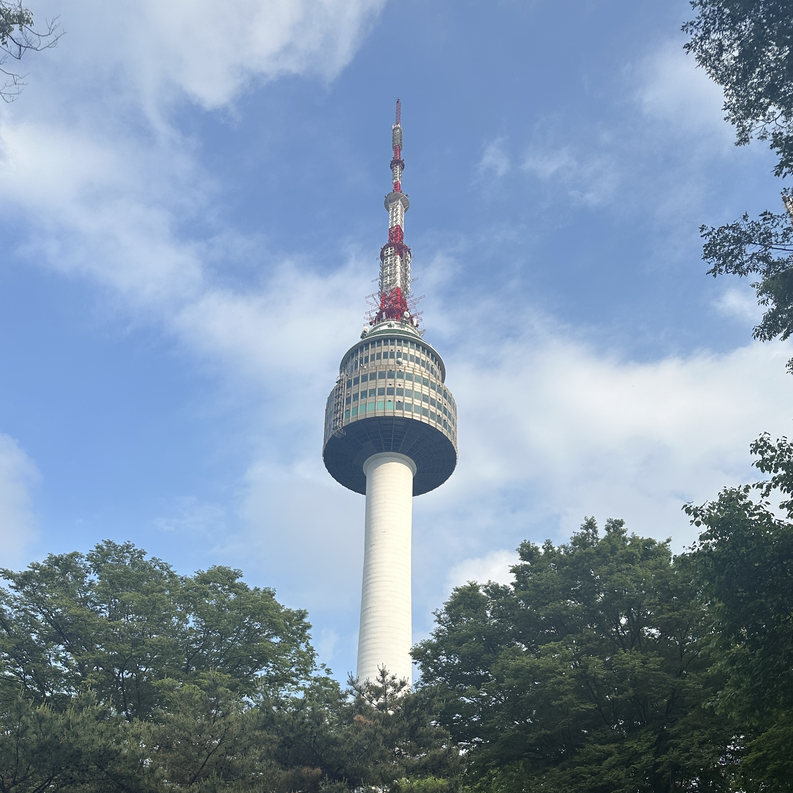

N Seoul Tower
Carson Perz
The N Seoul Tower, located in Seoul (not surprisingly), was one of the highlights of my trip. In the early evening, our tour group arrived at the base of the tower. There, we found a beautiful park area with many visitors. This park area also had access to many convenience stores, restaurants, and gift shops. The key point of this park are the thousands of padlocks secured on the railings of the fence. Many people, especially couples, inscribe these padlocks with their names or other messages and secure them to the fencing. There were so many of various colors and shapes, and our group found padlocks inscribed with dozens of different languages!
Following our time in the park, we took a gondola up to the actual base of the tower. After entering the tower, we took the high-speed elevator to the top of the tower. The tower also had shops and places to eat, similar to the park below. This tower is not necessarily incredibly tall (only around 800 feet), but it offers an incredible view of Seoul. Since our group came to the tower in the evening, by the time we reached the tower, a sunset was forming over the city. It was absolutely a major highlight of my South Korea trip.
| Year | Milestone of N Seoul Tower |
|---|---|
| 1969 | The N Seoul Tower begins its construction. |
| 1971 | The N Seoul Tower's construction is complete. |
| 1980 | The N Seoul Tower opens to the public and becomes a major tourist attraction in Seoul. |